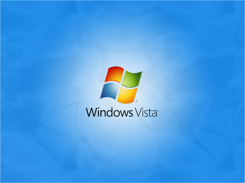

Windows Vista™ yenilik olarak neler getiriyor ? Bunları madde madde sıralamak mümkün, ancak göze çarpan ilk değişiklik görsellikte. Masaüstü ikonları, pencerelerin görünümü vb…
Bilgisayarınıza yükleyip kullanmaya baÅŸladığınızda bu yeni görünümden etkilenmemek mümkün değil. Bilgisayarda yapacak iÅŸiniz olmasa bile Windows Vista™ ile uğraÅŸmak, yeni neler var acaba diyerek saatler boyunca bilgisayarınızın başından kalkamıyorsunuz… Ancak belli bir süre Windows Vista’yı kullandıktan sonra gözünüz bu yeniliklere alışıyor, bu yeni görünümün aslında sistem kaynaklarınızın ne kadar büyük bir kısmını tükettiğini fark ediyorsunuz. Performans gerektiren iÅŸlemlerde Windows Vista’nın nasıl ÅŸiÅŸtiğini (!) bizzat farkediyorsunuz.
Windows Vista’nın getirdiği yenilikler şöyle özetlenebilir.
1- Aero, saydam olabilen pencereler, pencereler arasında 3D geçiş… 2- Dialog kutuları, dosyaları etiketlemeyi kolaylaÅŸtıran ek özelliklerin yanında, standart ikonlar yerine dosyaların önizlemelerini görebilmek mümkün. 3- Sistem tepsisindeki bildirimler artık 32x32 boyutunda ikonlarla birlikte, eğer kullanıcı tam ekran bir programla çalışmıyor, inaktif değilse gözüküyor ve 9 saniye ekranda kalıyor. 4- Search kutuları, explorer içine entegre edilmiÅŸ, Windows Vista’nın endeksleme sistemi ile daha verimli aramalar yapılabiliyor. 5- Görev Dialog kutuları, çalıştırılacak programlar ile ilgili bilgi veren kutular. (User Account Control’ün bir parçası) 6- Kontrol Panel, iÅŸletim sisteminin özelliklerine ulaÅŸabilmek için merkezi bir yer. 7- Ä°konlar maksimum boy olarak 256x256 pixele ulaÅŸmış durumda, özellikle büyük ekranlar için önemli bir özellik. 8- System font Segoe olarak değiÅŸmiÅŸ, ClearType kullanımına uygun bir font kullanılmış. Default boy olarak 9 kullanılmış.